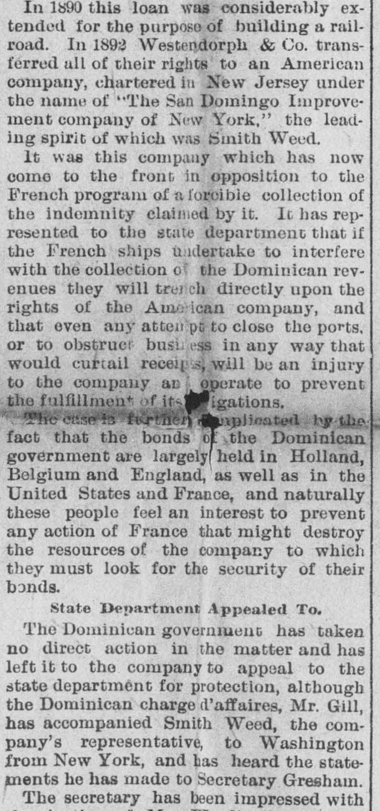
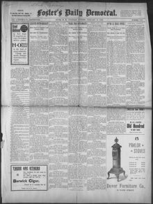

Task for DiplomatsTarea para diplomáticos
Foster's Daily Democrat. Dover, N.H., February 28, 1895. Page 1. Published by Geo. J. Foster & Co. A daily newspaper.Foster's Daily Democrat. Dover, N.H., 28 de febrero de 1895. Página 1. Publicado por Geo. J. Foster & Co. Periódico diario. View the originalVer el original


See the full pageVer la página completaFoster's Daily Democrat reported that the San Domingo Improvement Company urged the State Department to halt threatened French naval interference with Dominican customs houses, which secured foreign loans transferred from Dutch financiers in 1892. The company argued that any blockade or revenue seizure would violate American property rights and jeopardize international bondholders. Dominican representative Gil accompanied company officials to Washington to seek American diplomatic intervention.Foster's Daily Democrat informó que la San Domingo Improvement Company instó al Departamento de Estado a frenar la amenazada interferencia naval francesa en las aduanas dominicanas, las cuales garantizaban préstamos extranjeros cedidos por financistas holandeses en 1892. La compañía argumentó que cualquier bloqueo o incautación de rentas violaría los derechos de propiedad estadounidenses y pondría en peligro a los tenedores internacionales de bonos. El representante dominicano Gil acompañó a directivos de la compañía a Washington para solicitar la intervención diplomática estadounidense.
FULL TEXT:TEXTO COMPLETO:
Foster's Daily Democrat February 28, 189528 de febrero de 1895
Original in English.Original en inglés.
Task for DiplomatsTarea para diplomáticos
WASHINGTON, Feb. 28.—A question has recently arisen for the determination of the state department that may be of the first order of importance as affecting the relations of the United States with all of the countries of Central and South America and the independent republics of the West Indies, involving as it does the extent of the obligation upon the United States to protect these countries from the forcible collection of foreign debts and indemnities at the hands of European powers.WASHINGTON, 28 de febrero.—Ha surgido recientemente una cuestión para la resolución del Departamento de Estado que puede ser de primera importancia por cuanto afecta a las relaciones de los Estados Unidos con todos los países de América Central y del Sur y las repúblicas independientes de las Indias Occidentales, al implicar el alcance de la obligación de los Estados Unidos de proteger a estos países contra el cobro forzoso de deudas e indemnizaciones extranjeras a manos de potencias europeas.
Several years ago the President of San Domingo forcibly entered a French bank there and took from the vaults a considerable sum of money, which he alleged to be owing to him. The matter being reported to the French government, it was made a subject of negotiations, and wound up with a formal demand for restitution.Hace varios años, el Presidente de Santo Domingo entró por la fuerza en un banco francés allí establecido y se apoderó de las bóvedas de una considerable suma de dinero, la cual alegaba que se le adeudaba. Tras ponerse el asunto en conocimiento del gobierno francés, este fue objeto de negociaciones y concluyó con una demanda formal de restitución.
This was refused, and the French government, after using peaceable means of securing indemnity, indicated a purpose of sending some war vessels to San Domingo to enforce a collection. It was the purpose of the French to seize upon a sufficient amount of the revenues of the republic to reimburse the claims.Esto fue denegado, y el gobierno francés, tras recurrir a medios pacíficos para asegurar una indemnización, manifestó el propósito de enviar algunos buques de guerra a Santo Domingo para imponer el cobro. El propósito de los franceses era incautar una cantidad suficiente de las rentas de la república para reembolsar las reclamaciones.
Beginning of Complications. At this point an obstacle was interposed by an American company. The Dominican government, being in financial straits in 1888, made an arrangement with the firm of Westendorph & Co., bankers of Amsterdam, for a loan of £770,000 to take up the internal and foreign debt of the republic.Comienzo de las complicaciones. En este punto se interpuso un obstáculo por parte de una compañía estadounidense. Al encontrarse el gobierno dominicano en apuros financieros en 1888, concertó un arreglo con la firma Westendorph & Co., banqueros de Ámsterdam, para un préstamo de 770.000 libras esterlinas con el fin de asumir la deuda interna y externa de la república.
To insure payment, the Amsterdam company was given the right to collect directly here from all the Dominican custom houses, and the loan was made a first lien upon all the customs receipts and a mortgage of all the revenues of the country.Para garantizar el pago, se otorgó a la compañía de Ámsterdam el derecho de recaudar directamente de todas las aduanas dominicanas, y el préstamo quedó constituido como un primer gravamen sobre todos los ingresos aduaneros y una hipoteca sobre todas las rentas del país.
In 1890 this loan was considerably extended for the purpose of building a railroad. In 1892, Westendorph & Co. transferred all of their rights to an American company, chartered in New Jersey under the name of "The San Domingo Improvement company of New York," the leading spirit of which was Smith Weed.En 1890 este préstamo se amplió considerablemente con el propósito de construir un ferrocarril. En 1892, Westendorph & Co. transfirió todos sus derechos a una compañía estadounidense, constituida en Nueva Jersey bajo el nombre de «The San Domingo Improvement company of New York», cuya figura principal era Smith Weed.
It was this company which has now come to the front in opposition to the French program of a forcible collection of the indemnity claimed by it. It has represented to the state department that if the French ships undertake to interfere with the collection of the Dominican revenues they will trench directly upon the rights of the American company, and that even any attempt to close the ports, or to obstruct business in any way that would curtail receipts, will be an injury to the company and operate to prevent the fulfillment of its obligations.Ha sido esta compañía la que ahora ha pasado al frente en oposición al programa francés de cobro forzoso de la indemnización por este reclamada. Ha manifestado ante el Departamento de Estado que, si los buques franceses pretenden interferir en la recaudación de las rentas dominicanas, vulnerarán directamente los derechos de la compañía estadounidense, y que incluso cualquier intento de cerrar los puertos o de obstruir los negocios de cualquier manera que reduzca los ingresos, supondrá un perjuicio para la compañía y actuará impidiendo el cumplimiento de sus obligaciones.
The case is further complicated by the fact that the bonds of the Dominican government are largely held in Holland, Belgium and England, as well as in the United States and France, and naturally these people feel an interest to prevent any action of France that might destroy the resources of the company to which they must look for the security of their bonds.El caso se complica aún más por el hecho de que los bonos del gobierno dominicano se hallan en gran medida en manos de tenedores en Holanda, Bélgica e Inglaterra, así como en los Estados Unidos y Francia, y, como es natural, estas personas tienen interés en impedir cualquier acción de Francia que pudiera destruir los recursos de la compañía a la que deben recurrir para la seguridad de sus bonos.
State Department Appealed To. The Dominican government has taken no direct action in the matter, and has left it to the company to appeal to the state department for protection, although the Dominican charge d'affaires, Mr. Gill, has accompanied Smith Weed, the company's representative, to Washington from New York, and has heard the statements he has made to Secretary Gresham.Apelación al Departamento de Estado. El gobierno dominicano no ha tomado medidas directas en el asunto y ha dejado en manos de la compañía la apelación al Departamento de Estado en busca de protección, si bien el encargado de negocios dominicano, el Sr. Gill, ha acompañado a Smith Weed, representante de la compañía, a Washington desde Nueva York, y ha presenciado las declaraciones que este ha presentado ante el secretario Gresham.
The secretary has been impressed with the justice of Mr. Weed's claims, and cabled Mr. Eustis, our ambassador to France, instructing him to inform the French government that the United States could not look with indifference upon its proposed action.El secretario ha quedado impresionado por la justicia de las reclamaciones del Sr. Weed y envió un cablegrama al Sr. Eustis, nuestro embajador en Francia, instruyéndole a informar al gobierno francés de que los Estados Unidos no podrían contemplar con indiferencia la acción que se propone llevar a cabo.
That is the usual gentle diplomatic warning that precedes more urgent representations in such cases, and it remains to be seen whether it will be sufficient. Probably it will not be, for it strikes at the right that has been freely assumed by European nations to collect indemnities, and even to require the payment of foreign debts by force if necessary.Esa es la habitual y suave advertencia diplomática que precede a representaciones más apremiantes en tales casos, y queda por ver si será suficiente. Probablemente no lo sea, pues atenta contra el derecho que las naciones europeas se han arrogado libremente de cobrar indemnizaciones, e incluso de exigir el pago de deudas extranjeras por la fuerza de ser necesario.
The incident acquires additional importance from the fact that several of the small republics of Central and South America have recently defaulted in the payment of interest upon the foreign debts, mostly held in Europe, and if the United States is committed to the asserting of rights to them against their creditors in cases like that of San Domingo, it may be that they will follow the example of that country and farm out their revenues to American corporations in order to secure immunity.El incidente adquiere una importancia adicional por el hecho de que varias de las pequeñas repúblicas de América Central y del Sur han incurrido recientemente en mora en el pago de intereses sobre las deudas externas, en su mayor parte en manos europeas, y si los Estados Unidos se comprometen a hacer valer derechos a su favor frente a sus acreedores en casos como el de Santo Domingo, bien puede ser que sigan el ejemplo de ese país y arrienden sus rentas a corporaciones estadounidenses con el fin de asegurarse la inmunidad.